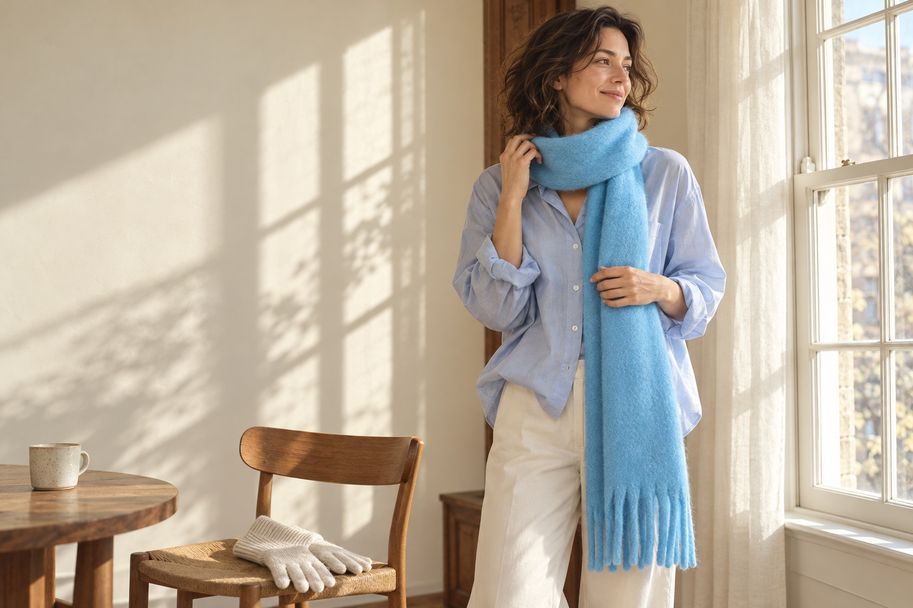
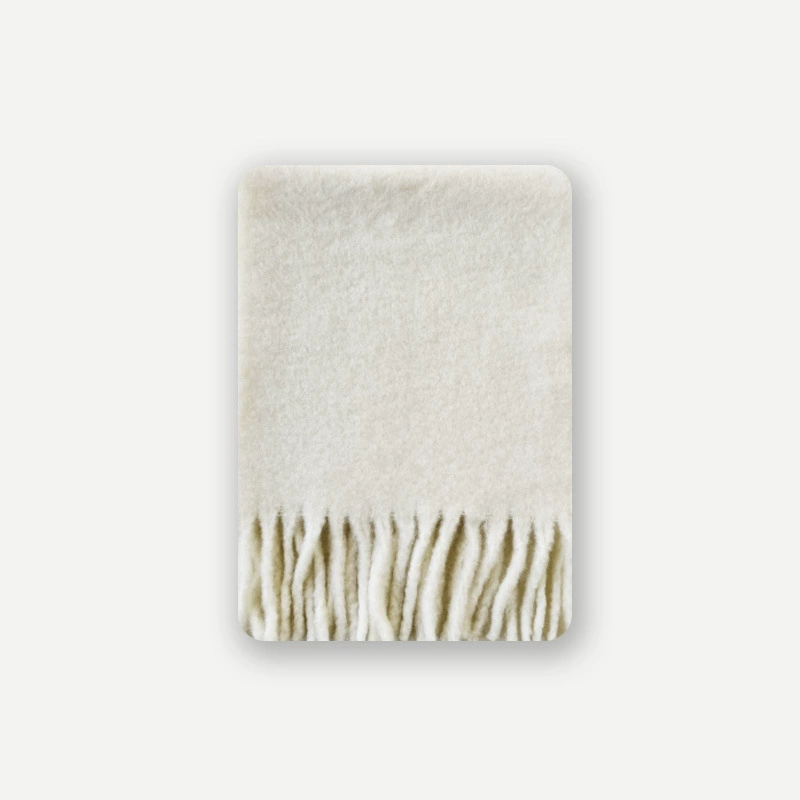

01

The Sunday edit
Good light. A quiet morning.
Something lovely to wrap up in.
For the coffee run that becomes a long walk.

out the door,
whenever you're ready.

Your everyday companions
A playful fringe. A familiar blue.
A piece you reach for before you leave.

Fringe Knit Scarf / Off-white